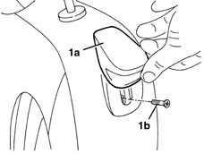

7045A48 LEVER and TRIM for folding backrest - R.R.
- Path
- Procedures > 70 FITTINGS > 7045 FRONT SEATS > 7045A front seat assembly > 7045A48 LEVER and TRIM for folding backrest - R.R.
- Kind
- repair procedure (removal / refitting; the operation number is the code)
- Applies to
- all engines; all production periods
- Interactive page
- https://sloeber94.github.io/elrnDB-lYpsln/en/#/2429614
Applies to: all engines; all production periods
 Removing
Removing
 Refitting
Refitting1. Raise the lever (1a) and undo the bolt (1b).

Applies to: all engines; all production periods
1. Remove the lever (1a) releasing the retainers (1b) and (1c).
Applies to: all engines; all production periods
Refitting
RemovingCheck that the lever is undamaged.
Position the lever attaching the retainers.
Tighten the bolt.
Topics that link to this page (7)
- 7045A18 FRONT SEAT BACKREST ASSEMBLY (ONE), LEFT OR RIGHT - R.R.
- 7045A51 SQUAB LUMBAR REINFORCEMENT ON FRONT SEAT, . (ONE) LEFT or RIGHT - R.R .
- 7045A78 Front seat BACKREST FRAME. (one), left or right - R.R.
- 7045B06 GUIDE BUSH for (one), front seat head restraint left or right - R.R.
- 7045D10 Front seat TRIM, left or right - R.R .
- 7045D30 Front seat BACKREST COVER, left or right - R.R.
- 7045L30 Backrest folding control CABLE/ROD - R.R.